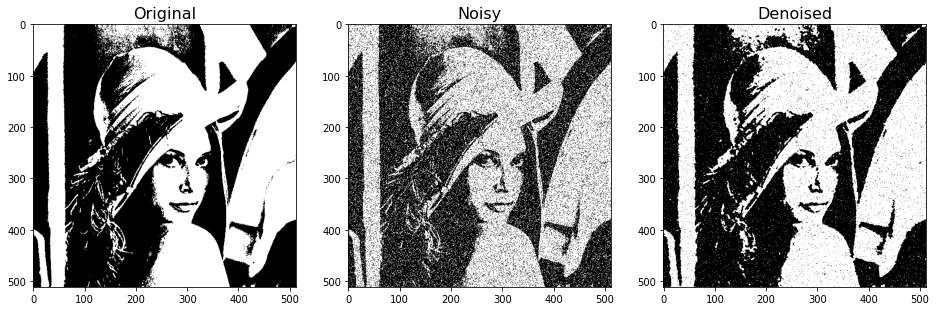
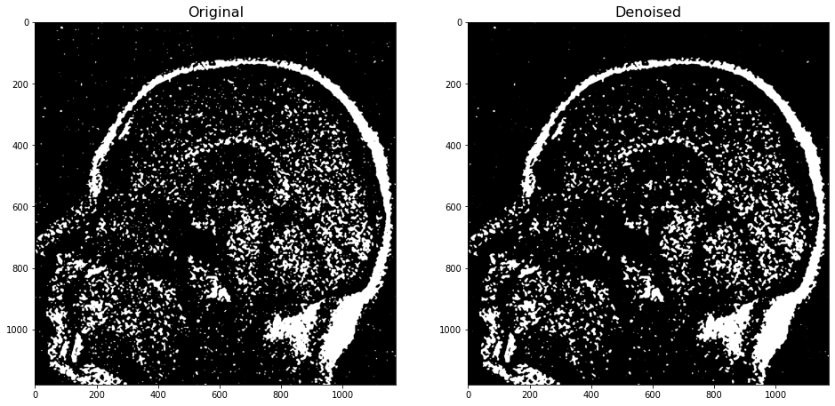
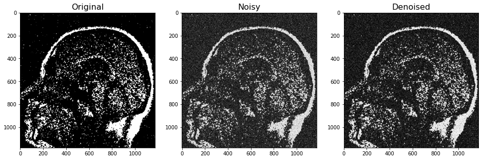

MCMC Applications: Denoising Images
Contents
MCMC Applications: Denoising Images#
References and credits
Following based on: https://github.com/suyunu/Markov-Chain-Monte-Carlo
Another good reference: https://tanyaschlusser.github.io/posts/mcmc-and-the-ising-model/
The Markov-chain Monte Carlo Interactive Gallery https://chi-feng.github.io/mcmc-demo/
Image to Text#
import numpy as np
url = "https://www.cosy.sbg.ac.at/~pmeerw/Watermarking/lena_gray.gif"
from urllib.request import urlopen
from PIL import Image
imgX = Image.open(urlopen(url))
imgX = imgX.convert('L')
def image_to_text(img, outputfile="whatever.txt"):
img = np.asarray(img)
img = 2*(img > 128).astype(int)-1
#file = open(sys.argv[2], "w")
file = open(outputfile, "w")
txt = list(img)
for i in txt:
for j in i:
file.write(str(j) + " ")
file.write('\n')
file.close()
return img
outputfile = "outO.txt"
img_new = image_to_text(imgX,outputfile)
imgX
Make noise#
import sys
import numpy as np
def make_noise(txtfile, outputfile):
#img = np.loadtxt(sys.argv[1])
#img = np.loadtxt("outO.txt")
img = np.loadtxt(txtfile)
#pi = float(sys.argv[2])
pi = float(0.15)
I,J = img.shape
flip = np.random.rand(I,J) < pi
X = img * (-1)**flip
#file = open(sys.argv[3], "w")
file = open(outputfile, "w")
txt = list(X)
for i in txt:
for j in i:
file.write(str(int(j)) + " ")
file.write('\n')
file.close()
return X,I,J
txtfile = "outO.txt"
outputfile = "outN.txt"
X,I,J = make_noise(txtfile,outputfile)
Text to image#
import sys
import numpy as np
import warnings
warnings.filterwarnings("ignore")
from matplotlib import pyplot as plt
import imageio
def text_to_image(filepath,outimage):
img = np.loadtxt(filepath)
#imageio.imwrite(sys.argv[2], img)
imageio.imwrite(outimage, img)
plt.imshow(img,cmap='gray',vmin=-1,vmax=1)
plt.show()
I,J = img.shape
return I,J
filepath = "outN.txt"
outimage = "outI.png"
In,Jn = text_to_image(filepath,outimage)
WARNING:imageio:Lossy conversion from float64 to uint8. Range [-1.0, 1.0]. Convert image to uint8 prior to saving to suppress this warning.
Image Denoising#
We will sample a \(Z\) from the posterior distribution. Hopefully, it will appear as denoised.
beta, pi = 0.8, 0.15 # for arbitrary parameters that reflects our prior belief
gamma = 0.5*np.log((1-pi)/pi)
T = 500000 # sufficient number of steps to converge stationary distribution
Z = X.copy() # Initialize Z from X
for t in range(T):
if(t%10000==0):
#print("...{:}".format(t))
print('\r', 'Iteration', t, end='')
i,j = np.random.choice(I), np.random.choice(J) # randomly choose a coordinate (i,j)
# Calculate acceptance propability
# We don't take exponential. Instead, we take the log of random number. This is more stable.
delta_E = -2*gamma*X[i,j]*Z[i,j] -2*beta*Z[i,j]*(np.sum(Z[max(i-1,0):i+2,max(j-1,0):j+2]) - Z[i,j])
# We also don't deal with minimum function for acceptance probability
# because we don't need to cast it to 1 if it is higher.
# Flip the pixel if accepted
if np.log(np.random.rand()) < delta_E:
Z[i,j] = - Z[i,j] # Update the image
Iteration 490000
Result#
fig, ax = plt.subplots(1,3, figsize=(16,8))
ax[0].imshow(img_new,cmap='gray',vmin=-1,vmax=1)
ax[0].set_title("Original", fontsize=16)
ax[1].imshow(X,cmap='gray',vmin=-1,vmax=1)
ax[1].set_title("Noisy", fontsize=16)
ax[2].imshow(Z,cmap='gray',vmin=-1,vmax=1)
ax[2].set_title("Denoised", fontsize=16)
plt.show()

Apply to Medical Imaging#
#url2 = "https://encrypted-tbn0.gstatic.com/images?q=tbn:ANd9GcTjnOaoY1-_poLbinbtmsa51yvFC40OfVJOEKEvekj0svNFxX8l5vEst5dkf3veORPK3Gg&usqp=CAU"
url2 = "https://raw.githubusercontent.com/cfteach/brds/main/datasets/brain_image.png"
imgX2 = Image.open(urlopen(url2))
imgX2 = imgX2.convert('L')
imgX2
outputfile2 = "out_brain.txt"
img_new2 = image_to_text(imgX2,outputfile2)
outimage2 = "out_brain.png"
I,J = text_to_image(outputfile2,outimage2)
WARNING:imageio:Lossy conversion from float64 to uint8. Range [-1.0, 1.0]. Convert image to uint8 prior to saving to suppress this warning.
beta, pi = 0.8, 0.15 # for arbitrary parameters that reflects our prior belief
gamma = 0.5*np.log((1-pi)/pi)
T = 5000000 # sufficient number of steps to converge stationary distribution
img = np.loadtxt(outputfile2)
X = img
Z = X.copy() # Initialize Z from X
for t in range(T):
if(t%10000==0):
#print("...{:}".format(t))
print('\r', 'Iteration', t, end='')
i,j = np.random.choice(I), np.random.choice(J) # randomly choose a coordinate (i,j)
# Calculate acceptance propability
# We don't take exponential. Instead, we take the log of random number. This is more stable.
delta_E = -2*gamma*X[i,j]*Z[i,j] -2*beta*Z[i,j]*(np.sum(Z[max(i-1,0):i+2,max(j-1,0):j+2]) - Z[i,j])
# We also don't deal with minimum function for acceptance probability
# because we don't need to cast it to 1 if it is higher.
# Flip the pixel if accepted
if np.log(np.random.rand()) < delta_E:
Z[i,j] = - Z[i,j] # Update the image
Iteration 4990000
fig, ax = plt.subplots(1,2, figsize=(16,8))
ax[0].imshow(img,cmap='gray',vmin=-1,vmax=1)
ax[0].set_title("Original", fontsize=16)
ax[1].imshow(Z,cmap='gray',vmin=-1,vmax=1)
ax[1].set_title("Denoised", fontsize=16)
plt.show()

txtfile = "out_brain.txt"
outputfile = "out_brain_noisy.txt"
X_n,I_N,J_n = make_noise(txtfile,outputfile)
filepath = "out_brain_noisy.txt"
outimage = "out_brain_noisy.png"
I_n,J_n = text_to_image(filepath,outimage)
WARNING:imageio:Lossy conversion from float64 to uint8. Range [-1.0, 1.0]. Convert image to uint8 prior to saving to suppress this warning.
beta, pi = 0.8, 0.15 # for arbitrary parameters that reflects our prior belief
gamma = 0.5*np.log((1-pi)/pi)
T = 500000 # sufficient number of steps to converge stationary distribution
img = np.loadtxt(outputfile)
X = img
Z = X.copy() # Initialize Z from X
for t in range(T):
if(t%10000==0):
#print("...{:}".format(t))
print('\r', 'Iteration', t, end='')
i,j = np.random.choice(I_n), np.random.choice(J_n) # randomly choose a coordinate (i,j)
# Calculate acceptance propability
# We don't take exponential. Instead, we take the log of random number. This is more stable.
delta_E = -2*gamma*X[i,j]*Z[i,j] -2*beta*Z[i,j]*(np.sum(Z[max(i-1,0):i+2,max(j-1,0):j+2]) - Z[i,j])
# We also don't deal with minimum function for acceptance probability
# because we don't need to cast it to 1 if it is higher.
# Flip the pixel if accepted
if np.log(np.random.rand()) < delta_E:
Z[i,j] = - Z[i,j] # Update the image
Iteration 490000
fig, ax = plt.subplots(1,3, figsize=(16,8))
ax[0].imshow(np.loadtxt(outputfile2),cmap='gray',vmin=-1,vmax=1)
ax[0].set_title("Original", fontsize=16)
ax[1].imshow(X,cmap='gray',vmin=-1,vmax=1)
ax[1].set_title("Noisy", fontsize=16)
ax[2].imshow(Z,cmap='gray',vmin=-1,vmax=1)
ax[2].set_title("Denoised", fontsize=16)
plt.show()
